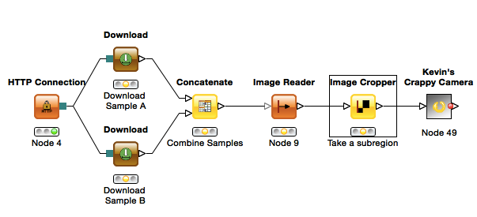
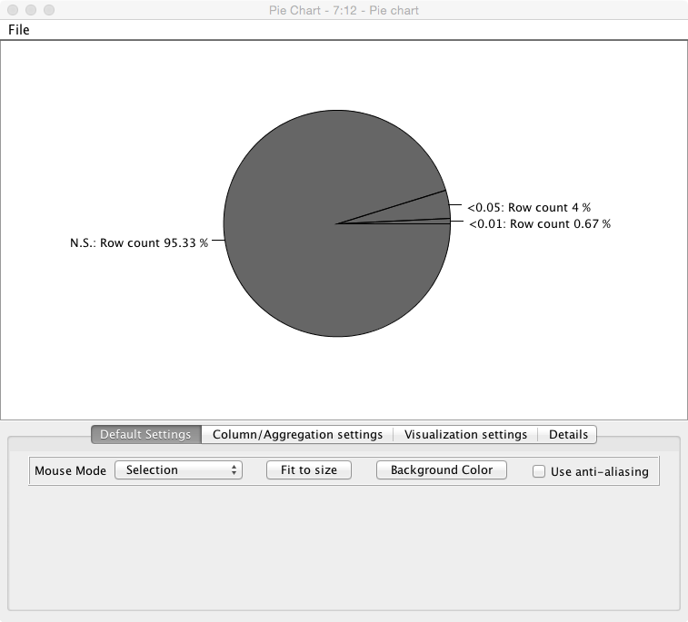
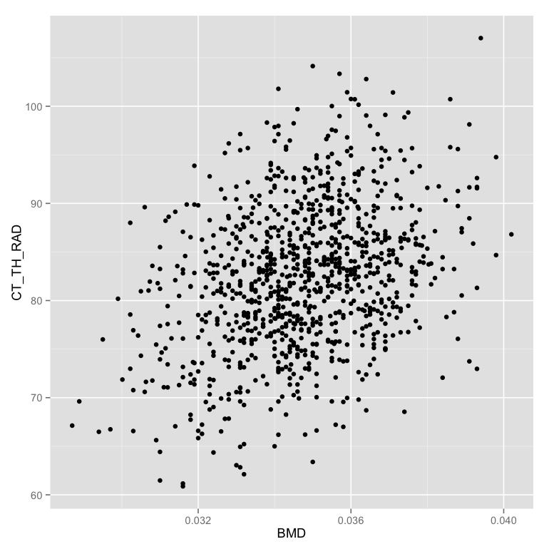
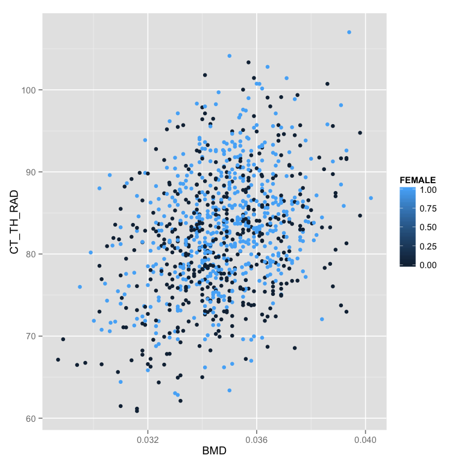
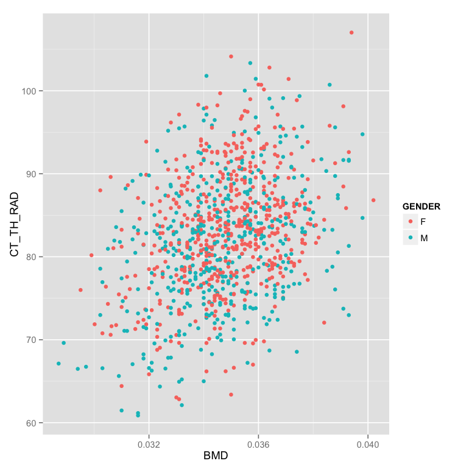
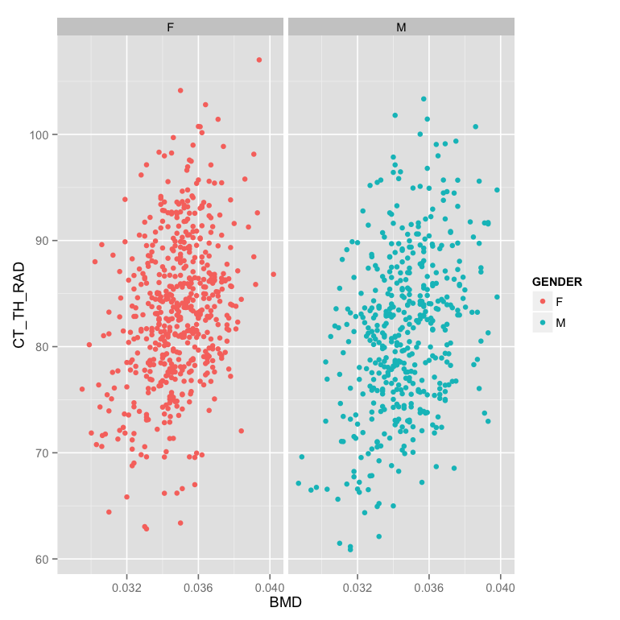
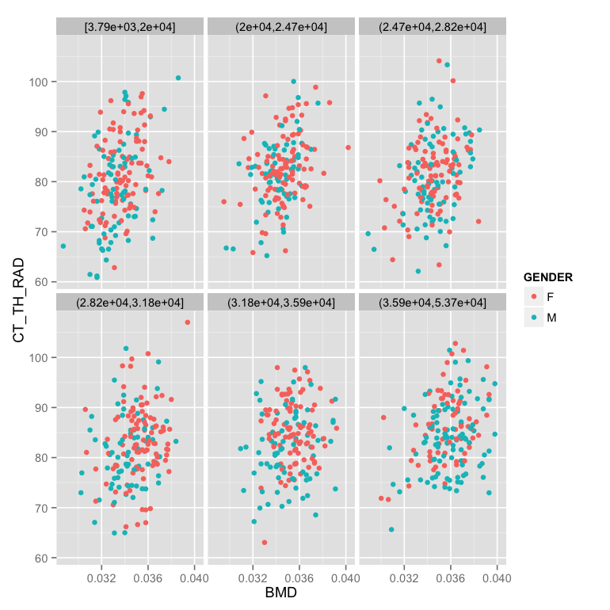
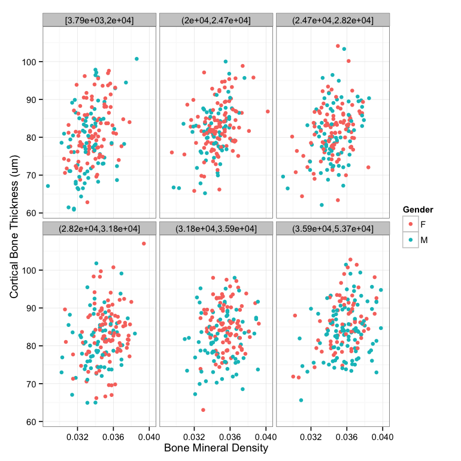

Exercise 8: Groups of Objects and Distributions
Kevin Mader
April 22, 2015
1 Introductory Material
1.1 R-Studio / R
For the Intraclass Correlation Coefficient you will need the ICC package which can be installed using the following command from R-Studio (or the R terminal)
install.packages("ICC")1.2 New Nodes
The new names are explained relative to the dataset used in the first problem. So read the first problem for more introductory material on these tables
1.3 Join
- This node takes two different tables and combines them together based on one or more key values.
- The default option is an ‘Inner’ join which means the output has all of the keys which appear in both the first (table A) and second (table B) table
- There are many other possibilities
 from (http://stackoverflow.com/questions/38549/difference-between-inner-and-outer-joins)
from (http://stackoverflow.com/questions/38549/difference-between-inner-and-outer-joins)- In many cases inside of KNIME the ‘RowID’ is a reasonable key (you perform a number of operations and want to compare it to the original result)
- For the aforementioned dataset we will apply an inner-join using the ‘Join’ block and matching on the ID column in both
| ID | BMD | MECHANICS_STIFFNESS | CORT_DTO__C_TH | CORT_DTO__C_TH_SD |
|---|---|---|---|---|
| 351 | 0.0302208 | 57.16318 | 0.186455 | 0.019785 |
| 356 | 0.0327883 | 54.97201 | 0.183007 | 0.015696 |
| 357 | 0.0360747 | 73.59088 | 0.216930 | 0.028019 |
| 359 | 0.0311451 | 49.85482 | 0.193758 | 0.024087 |
JOIN
| ID | D1Mit64 | D1Mit236 | D1Mit7 | D1Mit386 |
|---|---|---|---|---|
| 351 | H | H | H | H |
| 356 | H | A | A | A |
| 357 | H | B | B | B |
| 359 | A | B | B | B |
BECOMES (hiding excess columns)
| ID | BMD | MECHANICS_STIFFNESS | D1Mit64 | D1Mit236 |
|---|---|---|---|---|
| 351 | 0.0302208 | 57.16318 | H | H |
| 356 | 0.0327883 | 54.97201 | H | A |
| 357 | 0.0360747 | 73.59088 | H | B |
| 359 | 0.0311451 | 49.85482 | A | B |
1.4 Cross-Join
- This join performs what is mathematically known as a Cartesian Product on the two tables
- For those more familiar with computer programming nomenclature this is
for(eleA in tableA):
for (eleB in tableB):
yield (eleA,eleB)- in plain language this is equivalent of combining every element with every other element
- This is useful when performing parameter sweeps or other similar analyses where you want to try every threshold value with every sigma value with every type of filter (since you have no prior information about which one works best and they all work effectively independently)
- Using the last table as an example (while it might initially not seem to make sense, it is actually used for measuring the error level in such systems permuting the genetic material through the original phenotype data to determine the baseline number of correlations found)
| ID | BMD | MECHANICS_STIFFNESS | CORT_DTO__C_TH | CORT_DTO__C_TH_SD |
|---|---|---|---|---|
| 351 | 0.0302208 | 57.16318 | 0.186455 | 0.019785 |
| 356 | 0.0327883 | 54.97201 | 0.183007 | 0.015696 |
| 357 | 0.0360747 | 73.59088 | 0.216930 | 0.028019 |
| 359 | 0.0311451 | 49.85482 | 0.193758 | 0.024087 |
CROSS JOIN
| ID | D1Mit64 | D1Mit236 | D1Mit7 | D1Mit386 |
|---|---|---|---|---|
| 351 | H | H | H | H |
| 356 | H | A | A | A |
| 357 | H | B | B | B |
| 359 | A | B | B | B |
BECOMES (hiding excess columns)
| ID.x | BMD | MECHANICS_STIFFNESS | ID.y | D1Mit64 | D1Mit236 |
|---|---|---|---|---|---|
| 351 | 0.0302208 | 57.16318 | 351 | H | H |
| 356 | 0.0327883 | 54.97201 | 351 | H | H |
| 357 | 0.0360747 | 73.59088 | 351 | H | H |
| 359 | 0.0311451 | 49.85482 | 351 | H | H |
| 351 | 0.0302208 | 57.16318 | 356 | H | A |
| 356 | 0.0327883 | 54.97201 | 356 | H | A |
| 357 | 0.0360747 | 73.59088 | 356 | H | A |
| 359 | 0.0311451 | 49.85482 | 356 | H | A |
| 351 | 0.0302208 | 57.16318 | 357 | H | B |
| 356 | 0.0327883 | 54.97201 | 357 | H | B |
| 357 | 0.0360747 | 73.59088 | 357 | H | B |
| 359 | 0.0311451 | 49.85482 | 357 | H | B |
| 351 | 0.0302208 | 57.16318 | 359 | A | B |
| 356 | 0.0327883 | 54.97201 | 359 | A | B |
| 357 | 0.0360747 | 73.59088 | 359 | A | B |
| 359 | 0.0311451 | 49.85482 | 359 | A | B |
1.5 Concatenate
- Concatenate is the last of the table operations covered today.
- It can be thought of as combining two tables which have the same columns but different row values
For example if we have each experiment in a separate file, it would make sense to concatenate them all together rather than Join or Cross Join
First table
| ID | BMD | MECHANICS_STIFFNESS | CORT_DTO__C_TH | CORT_DTO__C_TH_SD |
|---|---|---|---|---|
| 351 | 0.0302208 | 57.16318 | 0.186455 | 0.019785 |
| 356 | 0.0327883 | 54.97201 | 0.183007 | 0.015696 |
| 357 | 0.0360747 | 73.59088 | 0.216930 | 0.028019 |
| 359 | 0.0311451 | 49.85482 | 0.193758 | 0.024087 |
Second set of results
ID BMD MEC HANICS_STIFFNESS COR T_DTO__C_TH COR T_DTO__C_TH_SD 21 457 0.0311451 49.28858 0.178971 0.020928 22 459 0.0293992 58.17281 0.158907 0.018856 23 470 0.0316586 61.49628 0.162435 0.019928 24 472 0.0345342 56.62613 0.185258 0.028595
The concatenation of the two groups
| ID | BMD | MECHANICS_STIFFNESS | CORT_DTO__C_TH | CORT_DTO__C_TH_SD | |
|---|---|---|---|---|---|
| 1 | 351 | 0.0302208 | 57.16318 | 0.186455 | 0.019785 |
| 2 | 356 | 0.0327883 | 54.97201 | 0.183007 | 0.015696 |
| 3 | 357 | 0.0360747 | 73.59088 | 0.216930 | 0.028019 |
| 4 | 359 | 0.0311451 | 49.85482 | 0.193758 | 0.024087 |
| 21 | 457 | 0.0311451 | 49.28858 | 0.178971 | 0.020928 |
| 22 | 459 | 0.0293992 | 58.17281 | 0.158907 | 0.018856 |
| 23 | 470 | 0.0316586 | 61.49628 | 0.162435 | 0.019928 |
| 24 | 472 | 0.0345342 | 56.62613 | 0.185258 | 0.028595 |
2 Tasks
- The workflows (or their starts) are available here.
2.1 Running basic statistical analyses
For this example we will start with a fairly complicated dataset from a genetics analysis we did at the Institute of Biomechanics.
2.1.1 Introduction
There are 1000 mouse femur bones which have been measured at high resolution and a number of shape analyses run on each sample. - Phenotypical Information - Each column represents a metric which was assessed in the images - CORT_DTO__C_TH for example is the mean thickness of the cortical bone
| ID | BMD | MECHANICS_STIFFNESS | CORT_DTO__C_TH | CORT_DTO__C_TH_SD |
|---|---|---|---|---|
| 351 | 0.0302208 | 57.16318 | 0.186455 | 0.019785 |
| 356 | 0.0327883 | 54.97201 | 0.183007 | 0.015696 |
| 357 | 0.0360747 | 73.59088 | 0.216930 | 0.028019 |
| 359 | 0.0311451 | 49.85482 | 0.193758 | 0.024087 |
- Genetic Information (genoTable.csv)
- Each animal has been tagged at a number of different regions of the genome (called markers: D1Mit236)
- At each marker there are 3 (actually 4) possibilities
- A is homozygous (the same from both parents) from the A strain
- B is homozygous from the B strain
- H is heterozygous (one from A, one from B)
‘-’ is missing or erronous measurements
ID D1Mi t64 D1Mi t236 D1Mi t7 D1Mi t386 101 685 A H H H 102 686 B B B H 103 687 A A H H 104 688 H H H A 105 689 H H - A
2.1.2 Tasks
- Download the two needed tables to start the analysis
- Using the workflow ‘ComparingSamples’ load the data and make sure you can produce the basic plots for the histogram

- Explore the data and correlations between various metrics by using the ‘Scatter Matrix’ plotting component. Change the components to examine different variables

- For the rest of the analysis you can connect the various components to the ‘Column Filter’ node since that is the last step in the processing
- Use one of the T-Test nodes in the Statistics -> Hypothesis Testing section to see if there is a statistically significant difference between Gender’s when examining Cortical Bone Microstructural Thickness (Mean)
- Which value is the p-value?
- What does the p-value mean, is it significant, by what criterion?
- Use another node from the Hypothesis Testing section to evaluate the effect on the D16Mit5 on the Lacuna Distribution Anisotropy? Is it significant?
2.1.3 Questions
- In the ‘Independent Groups T-Test’ node we can run a t-test against all of the columns at the same time, why SHOULDN’T we do this?

- If we do, how do we need to interpret this in the results
- Is p<0.05 a sufficient signifance criteria?
2.2 Comparing Two Real Bone Samples

For this example we will compare two real cortical bone samples taken from mice. The data will be downloaded in KNIME from the course website (KNIME can also download / upload to FTP servers making sharing results and data easier). - If you are using your own computer you will need to change the Target Folder in both of the “Download” nodes to something reasonable (just click Browse)
For the purpose of the analysis and keeping the data sizes small, we will use Kevin’s Crazy Camera again for simulating the noisy detection process. The assignment aims to be more integrative and you will combine a number of different lectures to get to the final answer.
2.2.1 Questions
- We want to know if there is a statistically significant difference in
- cell volume
- cell shape
- cell density
- between the two samples given the variation in the detector
- which metric do we need here? why?
- We see in the volume comparison a very skewed representation of the data

- why is this? (Hint check the segmented images)
- What might be done to alleviate it (hint Row Filter)
2.2.2 Hints
- Look at the kind of noise (you can peek inside the Crappy Camera) to choose the proper filter
- Use an automated thresholding technique for finding the bone automatic-methods

- To do this we will need to enhance the image, segment out the bone (dense) tissue, find the mask so that we can look at the background: contouring

- We then need to label the cells, and analyze their volume and shape: labeling

- Use a Chunk Loop for the Segmenting Features node to prevent all of the features being dumped into the same output (they can afterwards be recombined with the original images using the Join node)

- The final join should combine the output of the feature analysis (the end loop in this case) and the original crappy camera images. Since the Chunk Loop outputs iterations, we simply use that as the key for joining

- Use Morphology and strongy filter parameters it might be possible to maximize the differences in the groups
- You can make the plots in R (sometimes easier than KNIME) using the R View (Table) node and the following code (for volume)
library(ggplot2)
cur.df<-data.frame(
sample=as.factor(knime.in$"Image Number"),
measurement=knime.in$"Measurement_Number",
volume=knime.in$"Num Pix"
)
ggplot(cur.df,aes(x=volume))+
geom_density(aes(color=sample,group=measurement))+
theme_bw(25)- Mean Volume

library(ggplot2)
library(plyr)
cur.df<-data.frame(
sample=as.factor(knime.in$"Image Number"),
measurement=knime.in$"Measurement_Number",
volume=knime.in$"Num Pix"
)
sum.df<-ddply(cur.df,.(sample,measurement),function(in.df) {
data.frame(mean.volume=mean(in.df$volume),cell.count=nrow(in.df))
})
ggplot(sum.df,aes(x=mean.volume))+
geom_density(aes(color=sample))+
theme_bw(25)- Cell Count
library(ggplot2)
library(plyr)
cur.df<-data.frame(
sample=as.factor(knime.in$"Image Number"),
measurement=knime.in$"Measurement_Number",
volume=knime.in$"Num Pix"
)
sum.df<-ddply(cur.df,.(sample,measurement),function(in.df) {
data.frame(mean.volume=mean(in.df$volume),cell.count=nrow(in.df))
})
ggplot(sum.df,aes(x=cell.count))+
geom_density(aes(color=sample))+
theme_bw(25)- What is intraclass correlation? How can it be applied to these data?
- The following code can be used inside an R View block to calculate the ICC value (and then just click ‘Eval Script’)
library(ICC)
in.data<-data.frame(
metric = knime.in$"Num Pix",
group = knime.in$"Image Number"
)
icVal<-ICCbare(metric,group,data=in.data)$ICC
icVal- If the value for a specific metric is 0.012 how should we interpret that?
2.2.3 Big Hint (don’t read unless you’re stuck)
One possible final result looks something like this 
2.3 T-Test Simulator
This exercise (workflow named - Statistical Significance Hunter) shows the same results as we discussed in the lecture for finding p-values of significance. It takes a completely random stream of numbers with a mean 0.0 and tests them against a null hypothesis (that they equal 0) in small batches, you can adjust the size of the batches, the number of items and the confidence interval. The result is a pie chart showing the number of “significant” results found using the standard scientific criteria for common studies. 
2.3.1 Questions
- If we change the size of the chunks to the same as the number of elements in the list do we still expect to find ‘significant’ (<0.05) values? Why or why not?
- How does comparing against the null hypothesis being 0 relate to comparing two groups?
- How does comparing a single column compare to looking at different metrics for the same samples?
- What is bonferroni correction (hint: wikipedia) and how could it be applied to this simulation?
- Make the modification needed
2.4 Grammar of Graphics Plots in R (Work in Progress…)
2.4.1 Introduction
Making plots or graphics should be divided into separate independent components. - Setup is the \(ggplot\) command and the data - Mapping is in the \(aes\) command \[ ggplot(\textrm{input data frame},aes(x=\textrm{name of x column},y=\textrm{name of y column}))+ \] - Plot is the next command (geom_point, geom_smooth, geom_density, geom_histogram, geom_contour) \[ \textrm{geom_point}()+ \] - Coordinates can then be added to any type of plot (coord_equal, coord_polar, etc) - Scales can also be added (scale_x_log10, scale_y_sqrt, scale_color_gradientn) - Labels are added \[ labs(x="\textrm{x label}",y="\textrm{y label}",title="\textrm{title}") \]
2.4.2 Tasks
- Start RStudio
- Load the necessary libraries
library("ggplot2","knitr")- Load the phenoTable from the first exercise
# read the table in
phen.table<-read.csv("09-files/phenoTable.csv")
# take the first 4 rows and columns
p.sub.table<-pheno.table[c(1:4),c(35,c(1:4))]
# print it out nicely
kable(p.sub.table)| ID | BMD | MECHANICS_STIFFNESS | CORT_DTO__C_TH | CORT_DTO__C_TH_SD |
|---|---|---|---|---|
| 351 | 0.0302208 | 57.16318 | 0.186455 | 0.019785 |
| 356 | 0.0327883 | 54.97201 | 0.183007 | 0.015696 |
| 357 | 0.0360747 | 73.59088 | 0.216930 | 0.028019 |
| 359 | 0.0311451 | 49.85482 | 0.193758 | 0.024087 |
| - Set | up the inpu | t table as ```phen.tab | le``` and the map | ping with the x position mapped to BMD (Bone Mineral Density) and the y position as CT_TH_RAD (Cortical Bone Thickness) |
ggplot(phen.table,aes(x=BMD,y=CT_TH_RAD))- Create the first simple plot by adding a point representation to the plot
ggplot(phen.table,aes(x=BMD,y=CT_TH_RAD))+geom_point() - Change color of the points to show if the animal is female or not (in the mapping)
ggplot(phen.table,aes(x=BMD,y=CT_TH_RAD,color=FEMALE))+geom_point() - Show the color as a discrete (factor) value instead of a number
m.table<-mutate(phen.table,GENDER = ifelse(FEMALE==1,"F","M"))
ggplot(m.table,aes(x=BMD,y=CT_TH_RAD,color=GENDER))+geom_point() - Make the plot in two facets (windows) instead of the same one
ggplot(m.table,aes(x=BMD,y=CT_TH_RAD,color=GENDER))+
geom_point()+
facet_wrap(~GENDER) - Make the facet based on evenly (in number) dividing the points into 6 groups by the number of lacuna (LACUNA_COUNT)
m.table<-mutate(phen.table,
GENDER = ifelse(FEMALE==1,"F","M"),
LACUNA_NUMBER_GROUP = cut_number(LACUNA_COUNT,6)
)
ggplot(m.table,aes(x=BMD,y=CT_TH_RAD,color=GENDER))+
geom_point()+
facet_wrap(~LACUNA_NUMBER_GROUP) - Fix the labels and add a white background (theme_bw) with font-size 12
ggplot(m.table,aes(x=BMD,y=CT_TH_RAD,color=GENDER))+
geom_point()+
facet_wrap(~LACUNA_NUMBER_GROUP)+
labs(x="Bone Mineral Density",y="Cortical Bone Thickness (um)",color="Gender")+
theme_bw(12)
For more information and tutorial read about it in: http://ggplot2.org/
2.5 Unit Testing (Advanced)
- R : testit package in R to test functions
- Matlab : Matlab Unit Test Framework
- Python : easiest doctest or more flexible unittest
- Java : JUnit
- Scala : ScalaTest
Unit Testing works differently in every language but the major ideas remain the same.
- Using the language of your choice make a function that reads in an binary 2D array and counts the number of true points. In scala this would look like
def countPoints(in: Array[Array[Boolean]]): Int =
in.flatten.map(if(_) 1 else 0).sum- Now create a series of tests to ensure it works correctly
A simple 1x2 array with one true
import org.scalatest.{FunSuite, Matchers} class PointCounterTests extends FunSuite with Matchers test("Simple Array") { val simpleArr = Array(Array(true,false,false)) countPoints(simpleArr) shouldBe 1 } }An empty error should return 0
val emptyArr = Array(new Array[Boolean](0)) countPoints(emptyArr) shouldBe 0
2.5.1 Dynamic Languages!
It is critical to note, if you are using a statically-type language (C, C++, Fortran Java, Scala, Groovy, etc) you do not need to explicitly check type issues since that is automatically done by the compiler (you cannot give a string to a function expecting an integer, it simply will not run) If you are using a dynamically typed language (Matlab, Python, R, Mathematica, etc) you will need to make additional tests to make sure your function handles a variety of different input correctly. For example if you make the countPoints function in Matlab what happens when you give it a 3D array or a string? Either it should immediately throw an error message explaining that this input doesn’t make sense or explicitly handle this case. Otherwise you could have very unexpected behavior. The following is a perfectly reasonable function in Matlab
function [out]=isBiggerThanFive(inVar)
if inVar>5
disp([inVar ' is bigger than 5'])
out=true;
else
disp([inVar ' is smaller than 5'])
out=false;
endAnd if you execute isBiggerThanFive('Tom') it executes perfectly and you get Tom is bigger than 5 which is probably meaningless. It would be much better if the program throws an error saying that a string is not an appropriate type for this function.
2.6 Report Generation (Advanced)
- knitr for report generation
To make a report in RStudio you can go the File -> New Files -> R Markdown… menu. You can then enter code in blocks as are shown in the example and text or Markdown (text with dashes and pound signs for formatting) to make a document which compiles to a PDF, HTML-file, or Word Document.
This allows you to have your entire analysis in a simple document. Additionally it prevents you from having to deal with some of the major challenges with Matlab, Python, and R (dynamic languages) involving name-spaces and analyses that run fine now, but do not work or work differently tomorrow.